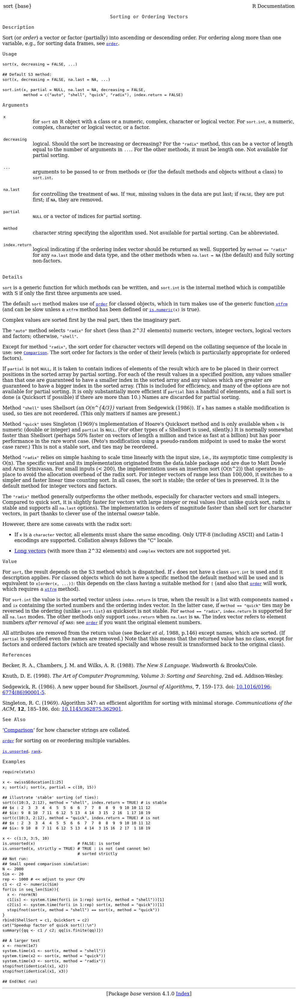

2 Basic Syntax
2.1 Arithmetic
2.3 Variables
2.4 Multiple Values
2.5 Functions
letters
#> [1] "a" "b" "c" "d" "e" "f" "g" "h" "i" "j" "k" "l" "m" "n" "o" "p" "q" "r" "s"
#> [20] "t" "u" "v" "w" "x" "y" "z"
toupper(x = letters)
#> [1] "A" "B" "C" "D" "E" "F" "G" "H" "I" "J" "K" "L" "M" "N" "O" "P" "Q" "R" "S"
#> [20] "T" "U" "V" "W" "X" "Y" "Z"
# ^ parameter or formal (argument)
LETTERS
#> [1] "A" "B" "C" "D" "E" "F" "G" "H" "I" "J" "K" "L" "M" "N" "O" "P" "Q" "R" "S"
#> [20] "T" "U" "V" "W" "X" "Y" "Z"
tolower(x = letters)
#> [1] "a" "b" "c" "d" "e" "f" "g" "h" "i" "j" "k" "l" "m" "n" "o" "p" "q" "r" "s"
#> [20] "t" "u" "v" "w" "x" "y" "z"
# ^^^^^^^ argument (always)We refer to x = letters as a named argument because we specify the parameter (x) to which we’re passing our argument (letters), but we often don’t specify the name of a parameter.
tolower(letters)
#> [1] "a" "b" "c" "d" "e" "f" "g" "h" "i" "j" "k" "l" "m" "n" "o" "p" "q" "r" "s"
#> [20] "t" "u" "v" "w" "x" "y" "z"We can’t screw up too easily since tolower() and toupper() only have one paramter (x), but many functions can take multiple arguments.
Let’s say we have a vector of unsorted numbers:
Like most languages, R has a built-in sort() function we can use, which works like so:
By default, sort() sorts in ascending order, but we oftentimes will want to sort in descending (or decreasing) order.
Rather than having a separate function called sort_decreasing(), we pass an argument to sort()’s decreasing parameter.
Even though sort() has multiple parameters, we can still skip the bames if we pass our arguments by position.
Considering that x is sort()’s first parameter, and decreaing is sort()’s second parameter, we can pass our arguments (unsorted_numbers and TRUE) in the same order and R will know what we meant.
We can also mix positional and named arguments, and often do.
You’re hopefully wondering “How could we know the order of sort()’s parameters?” which leads us to documentation.
If you want more information on a specific function, you should check out the documentation, which you can do with ? or help().
Here’s what that looks like for sort()

There’s a ton of information here, but all we’re interested in at the moment is the order in which we need to pass arguments to sort(), which we can find in the Arguments section.
We’ll cover functions in far more detail later, but sometimes it’s easier to see the how the function is defined, which we can by running sort without ().
sort
#> function (x, decreasing = FALSE, ...)
#> {
#> if (!is.logical(decreasing) || length(decreasing) != 1L)
#> stop("'decreasing' must be a length-1 logical vector.\nDid you intend to set 'partial'?")
#> UseMethod("sort")
#> }
#> <bytecode: 0x55b222ab4368>
#> <environment: namespace:base>Only pay attention to the first line right now, which is where you’ll see the following:
function (x, decreasing = FALSE, ...)This tells us x is the sort()’s first parameter and decreasing is its second parameter.
2.2 Comments